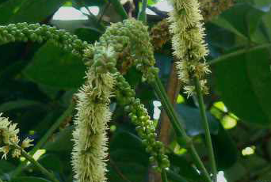

Specie: Entada phaseoloides
Taxonomy: Fabaceae; Caesalpinioideae; mimosoid clade; Mimoseae; Entada
Abbr: Eph
Level: Chromosome
chromosome number: 2n=2X=28

Introduction: Entada phaseoloides commonly named the box bean or St. Thomas’ bean, first described by Linnaeus, with its current name described by Merrill. E. phaseoloides is a liana in the pea family: called gugo, balugo or tamayan in the Philippines and bàm bàm in Viet Nam. No subspecies are listed in the Catalogue of Life. Entada phaseoloides is a large liana that climbs high into the lowland tropical forest canopy and found in lowland coastal forests of Africa, Australia, Asia and the Western Pacific. The lianas are often (but not exclusively) associated with waterways and seeds are widely dispersed by oceanic currents. Two subspecies have been described: The leaf structure is bi-pinnate compound divided into one to two pairs of leaflets. Leaflets are somewhat elliptical, between 25 and 100 mm (0.98 and 3.94 in) long and 10 to 60 mm (0.39 to 2.36 in) wide. Flowers are arranged in a raceme with green to red coloured sepals and green / cream petals that are between 2–3.5 mm (0.079–0.138 in) long. The characteristic pods can grow very large, up to 2 m (6 ft 7 in) long and 130 mm (5.1 in) wide. Each pod contains between 10 and 20 reddish brown seeds that are lens-shaped and about 40 to 60 mm (1.6 to 2.4 in) in diameter.
Distribution: Bangladesh, Bismarck Archipelago, Borneo, Caroline Is., China South-Central, China Southeast, Cook Is., East Himalaya, Fiji, Hainan, Hawaii, Japan, Jawa, Lesser Sunda Is., Maluku, Marianas, Marshall Is., Myanmar, Nansei-shoto, New Caledonia, New Guinea, Northern Territory, Philippines, Phoenix Is., Queensland, Samoa, Santa Cruz Is., Solomon Is., South China Sea, Sulawesi, Sumatera, Taiwan, Thailand, Tibet, Tonga, Tubuai Is., Vanuatu, Vietnam, Wallis-Futuna Is.
Article Title: Chromosome-level genome of Entada phaseoloides provides insights into genome evolution and biosynthesis of triterpenoid saponins
Data source: Sequencing raw data have been submitted to China National GeneBank (CNGB: https://db.cngb.org) with project accession ID: CNP0001900. The FASTA assembly files, annotation files and all raw read data used to generate the genome assembly described in our study can be download with CNA0029377 (https://ftp.cngb.org). The data are publicly available.